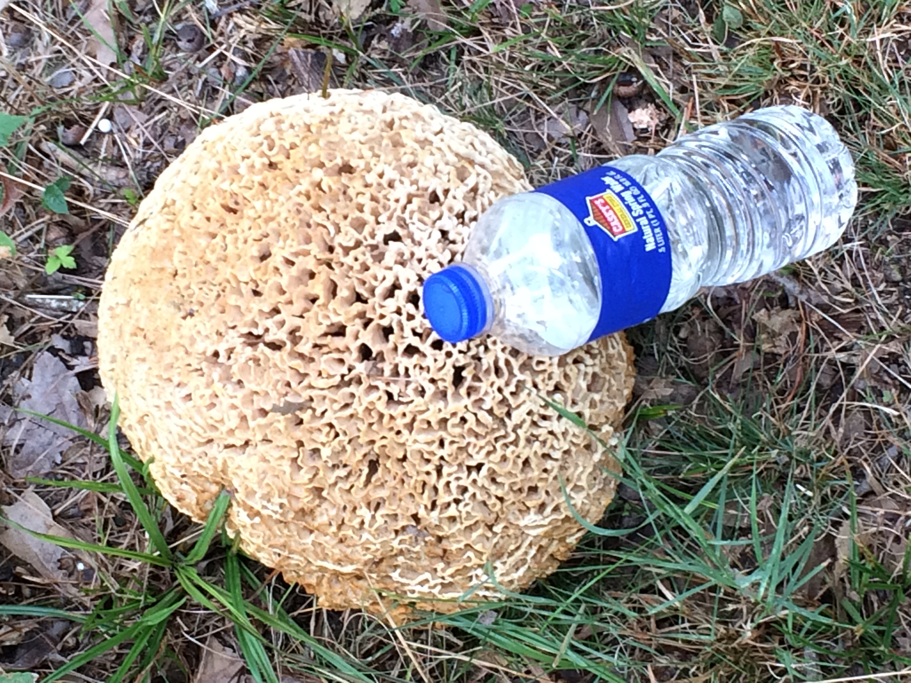
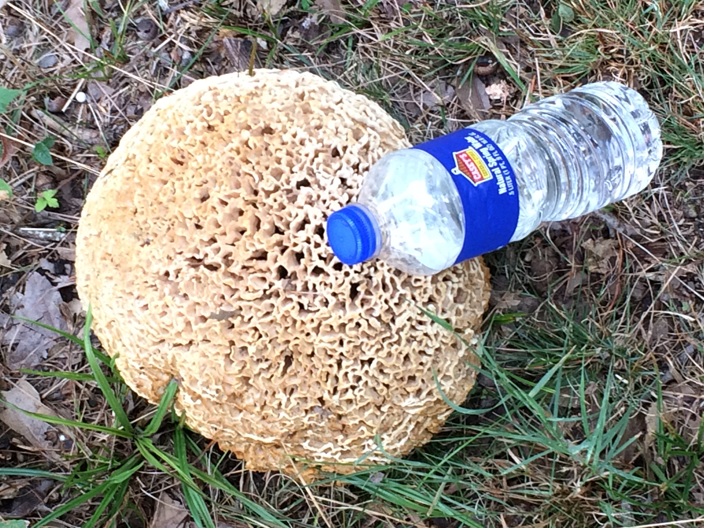

One of my favorite hobbies is going hiking. I've gone to several states now for hiking trips and spent a LOT of my free time during university outside in the woods. While going to school at SIUC, I would hike through the trails at Shawnee National Forest, as the school was basically next door to the forest. I took a lot of pictures during my trips and had a great time. Join me in exploring one of favorite hobbies, and let's take a walk through some of the cool stuff to see in nature.
I want to preface this entire page by apologizing for always taking photos with my phone in the upright position. Please forgive me! :) With that said, please enjoy the journey!
The campus at SIUC was had a pretty small lake, and one of my favorite things to do when I didn't have class was taking walks on the path around it. It was also a nice place to go in between classes to clear your head or kill a few minutes. It's not necessarily hiking, as the path is paved, but it's a scenic trail all times of the year.


Shawnee Forest has a lot of cliffs and overlooks that you can regularly see poking out from behind treelines. Some of these formations are distinct, such as Garden of the Gods, other nameless cliffs can be spotted all over the forest. Many of the trails are also focused around waterfalls.
One of the best things about hiking outside is finding mushrooms and other types of wild edibles. Almost anyone from the Midwest has heard of morel mushrooms, a regional delicacy that only comes around in the spring. They obviously grow outside of the region as well, but they're extremely popular in Southern Illinois and the surrounding areas. Mushrooms in general are just very photogenic as well with the various shapes, colors, and sizes they can come in. As always, do not eat anything you find in nature unless you're sure of what it is!

 

Nature has a lot to offer, and I love getting out and seeing as much of it as I can. I hope you enjoyed seeing some of the pictures from my hiking trips as much as I did taking them!